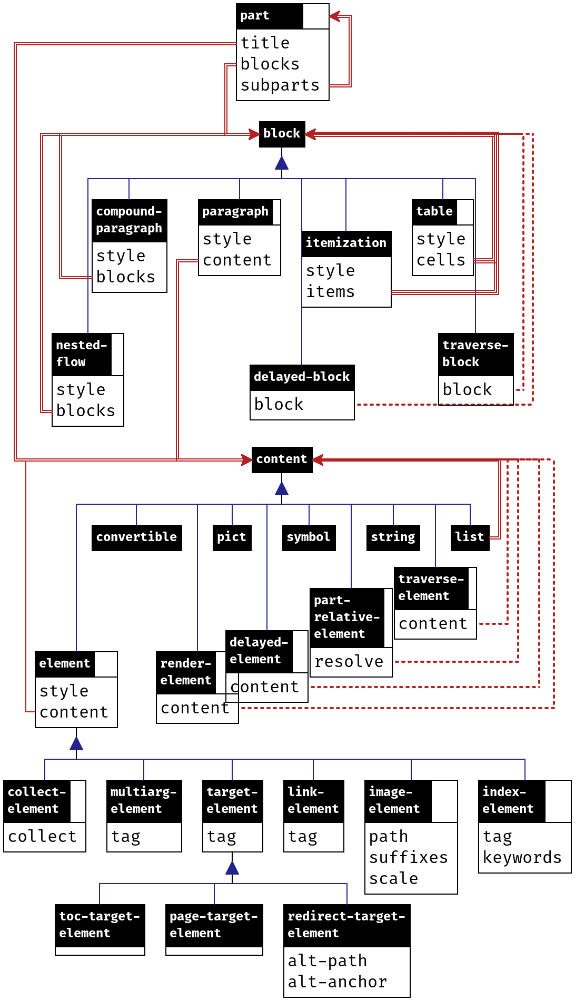

6.3 Structures And Processing
| (require scribble/core) | package： scribble-lib |
A document is represented as a part, as described in Parts, Flows, Blocks, and Paragraphs. This representation is intended to be independent of its eventual rendering, and it is intended to be immutable; rendering extensions and specific data in a document can collude arbitrarily, however.
A document is processed in four passes:
The traverse pass traverses the document content in document order so that information from one part of a document can be communicated to other parts of the same document. The information is transmitted through a symbol-keyed mapping that can be inspected and extended by traverse-elements and traverse-blocks in the document. The traverse pass iterates the traversal until it obtains a fixed point (i.e., the mapping from one iteration is unchanged from the previous iteration).
The collect pass globally collects information in the document that can span documents that are built at separate times, such as targets for hyperlinking.
The resolve pass matches hyperlink references with targets and expands delayed elements (where the expansion should not contribute new hyperlink targets).
None of the passes mutate the document representation. Instead, the traverse pass, collect pass, and resolve pass accumulate information in a side hash table, collect-info table, and resolve-info table. The collect pass and resolve pass are effectively specialized version of traverse pass that work across separately built documents.
6.3.1 Parts, Flows, Blocks, and Paragraphs
This diagram shows the large-scale structure of the type hierarchy for Scribble documents. A box represents a struct or a built-in Racket type; for example part is a struct. The bottom portion of a box shows the fields; for example part has three fields, title, blocks, and subparts. The substruct relationship is shown vertically with navy blue lines connected by a triangle; for example, a compound-paragraph is a block. The types of values on fields are shown via dark red lines in the diagram. Doubled lines represent lists and tripled lines represent lists of lists; for example, the blocks field of compound-paragraph is a list of blocks. Dotted lists represent functions that compute elements of a given field; for example, the block field of a traverse-block struct is a function that computes a block.
The diagram is not completely accurate: a table may have 'cont in place of a block in its cells field, and the types of fields are only shown if they are other structs in the diagram. A prose description with more detail follows the diagram.

A part is an instance of part; among other things, it has a title content, an initial flow, and a list of subsection parts. There is no difference between a part and a full document; a particular source module just as easily defines a subsection (incorporated via include-section) as a document.
A flow is a list of blocks.
A block is either a table, an itemization, a nested flow, a paragraph, a compound paragraph, a traverse block, or a delayed block.
A table is an instance of table; it has a list of list of blocks corresponding to table cells.
A itemization is an instance of itemization; it has a list of flows.
A nested flow is an instance of nested-flow; it has a flow that is typeset as sub-flow.
A paragraph is an instance of paragraph; it has a content:
A content can be a string, one of a few symbols, a convertible value in the sense of convertible?, an instance of element (possibly link-element, etc.), a multiarg-element, a traverse element, a part-relative element, a delayed element, or a list of content.
A string is included in the result document verbatim, except for space, and unless the content’s enclosing style is 'hspace. In a style other than 'hspace, consecutive spaces in the output may be collapsed togther or replaced with a line break. In the style 'hspace, all text is converted to uncollapsible spaces that cannot be broken across lines.
A symbol content is either 'mdash, 'ndash, 'ldquo, 'lsquo, 'rdquo, 'rsquo, 'larr, 'rarr, or 'prime; it is rendered as the corresponding HTML entity (even for Latex output).
A convertible value in the sense of convertible? is used in a renderer-specific way, but values convertible to 'text renders the same as the resulting string. If a renderer is not able to convert the value to a known format, the value is converted to a string using write.
An instance of element has a content plus a style. The style’s interpretation depends on the renderer, but it can be one of a few special symbols (such as 'bold) that are recognized by all renderers.
An instance of link-element has a tag for the target of the link.
An instance of target-element has a tag to be referenced by link-elements. An instance of the subtype toc-target-element is treated like a kind of section label, to be shown in the “on this page” table for HTML output.
An instance of index-element has a tag (as a target), a list of strings for the keywords (for sorting and search), and a list of contents to appear in the end-of-document index.
An instance of image-element incorporates an image from a file into the rendered document.
An instance of multiarg-element combines a style with a list of content, where the style corresponds to a rendered command that takes multiple arguments.
An instance of collect-element has a procedure that is called in the collect pass of document processing to record information used by later passes.
A traverse element is an instance of traverse-element, which ultimately produces content, but can accumulate and inspect information in the traverse pass.
A part-relative element is an instance of part-relative-element, which has a procedure that is called in the collect pass of document processing to obtain content. When the part-relative element’s procedure is called, collected information is not yet available, but information about the enclosing parts is available.
A delayed element is an instance of delayed-element, which has a procedure that is called in the resolve pass of document processing to obtain content.
An instance of render-element has a procedure that is called in the render pass of document processing.
A compound paragraph is an instance of compound-paragraph; like blockquote, it has list of blocks, but the blocks are typeset as a single paragraph (e.g., no indentation after the first block) instead of inset.
A traverse block is an instance of traverse-block, which ultimately produces another block, but can accumulate and inspect information during the traverse pass.
A delayed block is an instance of delayed-block, which has a procedure that is called in the resolve pass of document processing to obtain a block.
修改于package scribble-lib的1.23版本：Changed the handling of convertible? values to recognize a 'text conversion and otherwise use write.
6.3.2 Tags
A tag is a list containing a symbol and either a string, a generated-tag instance, or an arbitrary list. The symbol effectively identifies the type of the tag, such as 'part for a tag that links to a part, or 'def for a Racket function definition. The symbol also effectively determines the interpretation of the second half of the tag.
A part can have a tag prefix, which is effectively added onto the second item within each tag whose first item is 'part, 'tech, or 'cite, or whose second item is a list that starts with 'prefixable:
The prefix is added to a string second item by creating a list containing the prefix and string.
The prefix is added to a list second item after 'part, 'tech, or 'cite using cons.
The prefix is added to a second item that starts 'prefixable by adding it to the list after 'prefixable.
A prefix is not added to a generated-tag item.
The prefix is used for reference outside the part, including the use of tags in the part’s tags field. Typically, a document’s main part has a tag prefix that applies to the whole document; references to sections and defined terms within the document from other documents must include the prefix, while references within the same document omit the prefix. Part prefixes can be used within a document as well, to help disambiguate references within the document.
Some procedures accept a “tag” that is just the string part of the full tag, where the symbol part is supplied automatically. For example, section and secref both accept a string “tag”, where 'part is implicit.
The scribble/tag library provides functions for constructing tags.
6.3.3 Styles
A style combines a style name with a list of style properties in a style structure. A style name is either a string, symbol, or #f. A style property can be anything, including a symbol or a structure such as color-property.
A style has a single style name, because the name typically corresponds to a configurable instruction to a renderer. For example, with Latex output, a string style name corresponds to a Latex command or environment. For more information on how string style names interact with configuration of a renderer, see Extending and Configuring Scribble Output. Symbolic style names, meanwhile, provide a simple layer of abstraction between the renderer and documents for widely supported style; for example, the 'italic style name is supported by all renderers.
Style properties within a style compose with style names and other properties. Again, symbols are often used for properties that are directly supported by renderers. For example, 'unnumbered style property for a part renders the part without a section number. Many properties are renderer-specific, such as a hover-property structure that associates text with an element to be shown in an HTML display when the mouse hovers over the text.
6.3.4 Collected and Resolved Information
The collect pass, resolve pass, and render pass processing steps all produce information that is specific to a rendering mode. Concretely, the operations are all represented as methods on a render<%> object.
The result of the collect method is a collect-info instance. This result is provided back as an argument to the resolve method, which produces a resolve-info value that encapsulates the results from both iterations. The resolve-info value is provided back to the resolve method for final rendering.
Optionally, before the resolve method is called, serialized information from other documents can be folded into the collect-info instance via the deserialize-info method. Other methods provide serialized information out of the collected and resolved records.
During the collect pass, the procedure associated with a collect-element instance can register information with collect-put!.
During the resolve pass, collected information for a part can be extracted with part-collected-info, which includes a part’s number and its parent part (or #f). More generally, the resolve-get method looks up information previously collected. This resolve-time information is normally obtained by the procedure associated with a delayed block or delayed element.
The resolve-get information accepts both a part and a resolve-info argument. The part argument enables searching for information in each enclosing part before sibling parts.
6.3.5 Structure Reference
struct
(struct part ( tag-prefix tags title-content style to-collect blocks parts) #:extra-constructor-name make-part) tag-prefix : (or/c #f string?) tags : (listof tag?) title-content : (or/c #f list?) style : style? to-collect : list? blocks : (listof block?) parts : (listof part?)
The tags indicates a list of tags that each link to the section. Normally, tags should be a non-empty list, so that hyperlinks can target the section.
The title-content field holds the part’s title, if any.
For the style field, the currently recognized symbolic style names are as follows:
The recognized style properties are as follows:
'unnumbered —
A section number is not computed or rendered for the section. 'hidden-number —
A section number is computed for the section, but it is not rendered as part of the section name. 'toc-hidden —
The part title is not shown in tables of contents, including in “on this page” boxes. For Latex rendering, the part title is omitted only if it is unnumbered or has a hidden number. 'hidden —
The part title is not shown; for Latex output, the part title is not shown only if its is empty, and in that case, it is also excluded from tables of contents. The 'toc-hidden style property usually should be included with 'hidden (for consistency in non-Latex output). 'grouper —
The part is numbered with a Roman numeral, by default, and its subsections continue numbering as if they appeared in the preceeding part. In other words, the part acts like a “part” in a book where chapter numbering is continuous across parts. numberer —
A numberer created with make-numberer determines a representation of the part’s section number as an extension of it’s patent’s number. A numberer overrides the default representation, which is a natural number or (in the case of an accompanying 'grouper property) a Roman numeral. If a 'unnumbered property is also present, a numberer property is ignored. 'toc —
Sub-parts of the part are rendered on separate pages for multi-page HTML mode. 'non-toc —
Initial sub-parts of the part are not rendered on separate pages for multi-page HTML mode; this style property applies only to the main part. 'reveal —
Shows sub-parts when this part is displayed in a table-of-contents panel in HTML output (which normally shows only the top-level sections). 'quiet —
In HTML output and most other output modes, hides entries for sub-parts of this part in a table-of-contents or local-table-of-contents listing except when those sub-parts are top-level entries in the listing. 'no-toc —
As a style property for the main part of a rendered page, causes the HTML output to not include a margin box for the main table of contents; the “on this page” box that contains toc-element and toc-target-element links (and that only includes an “on this page” label for multi-page documents) takes on the location and color of the main table of contents, instead. 'no-sidebar —
As a style property for the main part of a document, causes the HTML output to not include an “on this page” margin box. 'no-index —
Has no effect as a style property on a part, but as a style property on a title or part-start that provides a part’s style via decode, the 'no-index style property cause decode to skip the generation of an entry for the part’s title in the document index. document-version structure —
A version number for this part and its sub-parts (except as overridden). When it is not "" may be used when rendering a document; at a minimum, a non-"" version is rendered when it is attached to a part representing the whole document. The default version for a document is (version). In rendered form, the version is normally prefixed with the word “Version,” but this formatting can be controlled by overriding .version:before and/or .versionNoNav:before in CSS for HTML rendering or by redefining the \SVersionBefore macro for Latex rendering (see Extending and Configuring Scribble Output). document-date structure —
A date for the part, normally used on a document’s main part for for Latex output. The default date for a document is #f, which avoids explicitly specifying a date at the Latex level, so that the current date is used as the document date. Set the date to "" to suppress a date in an output document. body-id structure —
Generated HTML uses the given string id attribute of the <body> tag; this style property can be set separately for parts that start different HTML pages, otherwise it is effectively inherited by sub-parts; the default is "scribble-racket-lang.org", but raco setup installs "doc-racket-lang.org" as the id for any document that it builds. attributes structure —
Provides additional HTML attributes for the <html> tag when the part corresponds to its own HTML page. head-extra structure —
Provides additional HTML content for the <head> tag when the part corresponds to its own HTML page. color-property structure —
For HTML, applies a color to the part title. background-color-property structure —
For HTML, applies a color to the background of the part title. hover-property structure —
For HTML, adds a text label to the title to be shown when the mouse hovers over it. render-convertible-as structure —
For HTML, controls how objects that subscribe to the file/convertible protocol are rendered. document-source structure —
For HTML, provides a module path for the part’s source. Clicking on an HTML section title generated for the part or its sub-parts may show the module path plus a section-tag string, so that the user can create a reference to the section. link-render-style structure —
Determines the default rendering of links to sections or other destinations within the section. See also link-element and current-link-render-style. 'enable-index-merge —
On an index parts or one of its enclosing parts for Latex output, causes index entries to be merged when they have the same content, with multiple references for the same entry combined with \Smanypageref. The \Smanypageref Latex macro must be redefined to accept multiple ,-separated labels and generate a suitable set of references. See also scriblib/book-index.
The to-collect field contains content that is inspected during the collect pass, but ignored in later passes (i.e., it doesn’t directly contribute to the output).
The blocks field contains the part’s initial flow (before sub-parts).
The parts field contains sub-parts.
修改于package scribble-lib的1.25版本：Added 'no-index support.
修改于1.26版本：Added link-render-style support.
struct
(struct paragraph (style content) #:extra-constructor-name make-paragraph) style : style? content : content?
For the style field, a string style name corresponds to a CSS class for HTML output or a macro for Latex output (see Implementing Styles). The following symbolic style names are recognized:
'author —
Typeset as the author of a document. Such paragraphs normally should appear only in the initial flow of a part for a document, where they are treated specially by the Latex renderer by moving the author information to the title. 'wraps —
Like a #f style name, but not boxable in the sense of box-mode for Latex output.
When a paragraph’s style is #f, then it is boxable in the sense of box-mode for Latex output.
The currently recognized style properties are as follows:
'omitable —
When a table cell contains a single paragraph with the 'omitable style property, then when rendering to HTML, no <p> tag wraps the cell content. 'div —
Generates <div> HTML output instead of <p> (unless a alt-tag property is provided). alt-tag structure —
Generates the indicated HTML tag instead of <p> or <div>. attributes structure —
Provides additional HTML attributes for the <p>, <div>, or alternate tag. body-id structure —
For HTML, uses the given string as an id attribute of the <p>, <div>, or alternate tag. 'never-indents —
For Latex and compound paragraphs; see compound-paragraph. box-mode structure —
For Latex output, uses an alternate rendering form for boxing contexts (such as a table cell); see box-mode.
struct
(struct table (style blockss) #:extra-constructor-name make-table) style : style? blockss : (listof (listof (or/c block? 'cont)))
A table has, roughly, a list of list of blocks. A cell in the table can span multiple columns by using 'cont instead of a block in the following columns (i.e., for all but the first in a set of cells that contain a single block).
Within style, a string style name corresponds to a CSS class for HTML output or an environment for Latex output (see Implementing Styles). The following symbolic style names are also recognized:
'boxed —
Renders as a definition. This style name is not intended for use on a table that is nested within a 'boxed table; nested uses may look right for some renders of the style but not others.
The following style properties are currently recognized:
table-columns structure —
Provides column-specific styles, but only column-attributes properties (if any) are used if a table-cells structure is included as a style property. See table-cells for information about how a column style is used for each cell. table-cells structure —
Provides cell-specific styles. See table-cells for information about how the styles are used. attributes structure —
Provides additional HTML attributes for the <table> tag. body-id structure —
For HTML, uses the given string as an id attribute of the <table> tag. 'aux —
For HTML, include the table in the table-of-contents display for the enclosing part. 'never-indents —
For Latex and compound paragraphs; see compound-paragraph.
For Latex output, a paragraph as a cell value is not automatically line-wrapped, unless a vertical alignment is specified for the cell through a table-cells or table-columns style property. To get a line-wrapped paragraph, use a compound-paragraph or use an element with a string style and define a corresponding Latex macro in terms of \parbox. For Latex output of blocks in the flow that are nested-flows, itemizations, compound-paragraphs, or delayed-blocks, the block is wrapped with minipage using \linewidth divided by the column count as the width.
struct
(struct itemization (style blockss) #:extra-constructor-name make-itemization) style : style? blockss : (listof (listof block?))
In style, a string style name corresponds to a CSS class for HTML output or a macro for Latex output (see Implementing Styles). In addition, the following symbolic style names are recognized:
'ordered —
Generates <ol> HTML output instead of <ul> or an Latex enumeration instead of an itemization.
The following style properties are currently recognized:
attributes structure —
Provides additional HTML attributes for the <ul> or <ol> tag. body-id structure —
For HTML, uses the given string as an id attribute of the <ul> or <ol> tag. 'never-indents —
For Latex and compound paragraphs; see compound-paragraph.
struct
(struct nested-flow (style blocks) #:extra-constructor-name make-nested-flow) style : any/c blocks : (listof block?)
In style, the style name is normally a string that corresponds to a CSS class for HTML <blockquote> output or a Latex environment (see Implementing Styles). The following symbolic style names are recognized:
'inset —
Insets the nested flow relative to surrounding text. 'code-inset —
Insets the nested flow relative to surrounding text in a way suitable for code. If the nested flow has a single block, then it is boxable in the sense of box-mode for Latex output. 'vertical-inset —
Insets the nested flow vertically relative to surrounding text, but not horizontally. If the nested flow has a single block, then it is boxable in the sense of box-mode for Latex output.
The following style properties are currently recognized:
'command —
For Latex output, a string style name is used as a command name instead of an environment name. 'multicommand —
For Latex output, a string style name is used as a command name with a separate argument for each block in blocks. attributes structure —
Provides additional HTML attributes for the <blockquote> tag. body-id structure —
For HTML, uses the given string as an id attribute of the <blockquote> tag. 'never-indents —
For Latex and compound paragraphs; see compound-paragraph. box-mode structure —
For Latex output, uses an alternate rendering form for boxing contexts (such as a table cell); see box-mode. 'decorative —
The content of the nested flow is intended for decoration. Text output skips a decorative nested flow. alt-tag structure —
Generates the indicated HTML tag instead of <blockquote>. 'pretitle —
For Latex, raises the contents of the flow to above the title.
struct
(struct compound-paragraph (style blocks) #:extra-constructor-name make-compound-paragraph) style : style? blocks : (listof block?)
For HTML, a paragraph block in blocks is rendered without a <p> tag, unless the paragraph has a style with a non-#f style name. For Latex, each block in blocks is rendered with a preceding \noindent, unless the block has the 'never-indents property (checking recursively in a nested-flow or compound-paragraph if the nested-flow or compound-paragraph itself has no 'never-indents property).
The style field of a compound paragraph is normally a string that corresponds to a CSS class for HTML output or Latex environment for Latex output (see Implementing Styles). The following style properties are currently recognized:
'command —
For Latex output, a string style name is used as a command name instead of an environment name. alt-tag structure —
Generates the given HTML tag instead of <p>. attributes structure —
Provides additional HTML attributes for the <p> or alternate tag. body-id structure —
For HTML, uses the given string as an id attribute of the <p> or alternate tag. 'never-indents —
For Latex within another compound paragraph; see above.
struct
(struct traverse-block (traverse) #:extra-constructor-name make-traverse-block) traverse : block-traverse-procedure/c
The traverse procedure is called with get and set procedures to get and set symbol-keyed information; the traverse procedure should return either a block (which effectively takes the traverse-block’s place) or a procedure like traverse to be called in the next iteration of the traverse pass.
All traverse-element and traverse-blocks that have not been replaced are forced in document order relative to each other during an iteration of the traverse pass.
The get procedure passed to traverse takes a symbol and any value to act as a default; it returns information registered for the symbol or the given default if no value has been registered. The set procedure passed to traverse takes a symbol and a value to registered for the symbol.
See also cond-block in scriblib/render-cond. The symbol 'scribble:current-render-mode is automatically registered to a list of symbols that describe the target of document rendering. The list contains 'html when rendering to HTML, 'latex when rendering via Latex, and 'text when rendering to text. The registration of 'scribble:current-render-mode cannot be changed via set.
struct
(struct delayed-block (resolve) #:extra-constructor-name make-delayed-block) resolve : (any/c part? resolve-info? . -> . block?)
struct
(struct element (style content) #:extra-constructor-name make-element) style : element-style? content : content?
The style field can be a style structure, but it can also be just a style name.
In style, a string style name corresponds to a CSS class for HTML output and a macro name for Latex output (see Implementing Styles). The following symbolic style names are recognized:
'tt, 'italic, 'bold, 'roman, 'sf, 'url, 'subscript, 'superscript, 'smaller, 'larger —
Basic styles recognized by all renders.
The following style properties are currently recognized:
target-url structure —
Generates a hyperlink. url-anchor structure —
For HTML, inserts a hyperlink target before content. color-property structure —
Applies a color to the text of content. background-color-property structure —
Applies a color to the background of content. alt-tag structure —
Generates the given HTML tag instead of the default one (<span>, <b>, etc.). attributes structure —
Provides additional HTML attributes for a tag. hover-property structure —
For HTML, adds a text label to the content to be shown when the mouse hovers over it. script-property structure —
For HTML, supplies a script alternative to content. xexpr-property structure —
For HTML, supplies literal HTML to render before and after content. body-id structure —
For HTML uses the given string as an id attribute of the <span> tag. 'aux —
Intended for use in titles, where the auxiliary part of the title can be omitted in hyperlinks. See, for example, secref. 'tt-chars —
For Latex output, when the style name is a string, render the element’s content with escapes suitable for Latex tt mode. 'exact-chars —
For Latex output, when the style name is a string or #f, render the elements content exactly (without escapes). command-extras structure —
For Latex output, adds strings as arguments to the Latex command.
修改于package scribble-lib的1.6版本：Changed 'exact-chars handling to
take effect when the style name is #f.
修改于1.27版本：Changed to support xexpr-property.
struct
(struct image-element element (path suffixes scale) #:extra-constructor-name make-image-element)
path :
(or/c path-string? (cons/c 'collects (listof bytes?))) suffixes : (listof #rx"^[.]") scale : real?
For each string in suffixes, if the rendered works with the corresponding suffix, the suffix is added to path and used if the resulting path refers to a file that exists. The order in suffixes determines the order in which suffixes are tried. The HTML renderer supports ".png", ".gif", and ".svg", while the Latex renderer supports ".png", ".pdf", and ".ps" (but rendering Latex output to PDF will not work with ".ps" files, while rendering to Latex DVI output works only with ".ps" files). If suffixes is empty or if none of the suffixes lead to files that exist, path is used as-is.
The scale field scales the image in its rendered form.
struct
(struct target-element element (tag) #:extra-constructor-name make-target-element) tag : tag?
struct
(struct toc-target-element target-element () #:extra-constructor-name make-toc-target-element)
struct
(struct toc-target2-element toc-target-element (toc-content) #:extra-constructor-name make-toc-target2-element) toc-content : content?
struct
(struct page-target-element target-element () #:extra-constructor-name make-page-target-element)
struct
(struct redirect-target-element target-element ( alt-path alt-anchor) #:extra-constructor-name make-redirect-target-element) alt-path : path-string? alt-anchor : string?
struct
(struct toc-element element (toc-content) #:extra-constructor-name make-toc-element) toc-content : content?
struct
(struct link-element element (tag) #:extra-constructor-name make-link-element) tag : tag?
Normally, the content of the element is rendered as the hyperlink. When tag is a part tag and the content of the element is null, however, rendering is treated specially based on the mode value of a link-render-style style property:
For HTML output, in the 'default mode, the generated reference is the hyperlinked title of the elements in the section’s title content, except that elements with the 'aux style property are omitted in the hyperlink label.
In 'number mode, the section title is not shown. Instead, the word “section” is shown followed by a hyperlinked section number. The word “section” starts in uppercase if the element’s style includes a 'uppercase property.
For Latex/PDF output, the generated reference’s format can depend on the document style in addition the mode. For the 'default mode and a default document style, a section number is shown by the word “section” followed by the section number, and the word “section” and the section number are together hyperlinked. The word “section” starts in uppercase if the element’s style includes a 'uppercase property. The scribble/manual style uses the symbol “§” in place of the word “section”.
In 'number mode, rendering is the same, except that only the number is hyperlinked, not the word “section” or the “§” symbol.
A new document style can customize Latex/PDF output (see Extending and Configuring Scribble Output) by redefining the \SecRefLocal, etc., macros (see Base Latex Macros). The \SecRef, etc., variants are used in 'number mode.
If a link-render-style style property is not attached to a link-element that refers to a part, a link-render-style style property that is attached to an enclosing part is used, since attaching a link-render-style style property to a part causes current-link-render-style to be set while rendering the part. Otherwise, the render-time value of current-link-render-style determine’s a link-element’s rendering.
The following style properties are recognized in addition to the style properties for all elements:
link-render-style structure —
As described above. 'indirect-link —
For HTML output, treats the link as “external”. When rendering to HTML and the set-external-tag-path method is called to provide an external-link URL, then the resolution of the hyperlink can be deferred until the link is clicked (or, in some cases, patched by JavaScript when the documentation is viewed in a browser).
修改于package scribble-lib的1.26版本：Added link-render-style support.
struct
(struct index-element element (tag plain-seq entry-seq desc) #:extra-constructor-name make-index-element) tag : tag? plain-seq : (and/c pair? (listof string?)) entry-seq : (listof content?) desc : any/c
The entry-seq list must have the same length as plain-seq. It provides the form of each key to render in the final document.
The desc field provides additional information about the index entry as supplied by the entry creator. For example, a reference to a procedure binding can be recognized when desc is an instance of procedure-index-desc. See scribble/manual-struct for other typical types of desc values.
See also index.
struct
(struct multiarg-element (style contents) #:extra-constructor-name make-multiarg-element) style : element-style? contents : (listof content?)
struct
(struct traverse-element (traverse) #:extra-constructor-name make-traverse-element) traverse : element-traverse-procedure/c
struct
(struct delayed-element (resolve sizer plain) #:extra-constructor-name make-delayed-element) resolve : (any/c part? resolve-info? . -> . content?) sizer : (-> any/c) plain : (-> any/c)
The sizer field is a procedure that produces a substitute content for the delayed element for the purposes of determining the delayed element’s width (see element-width).
The plain field is a procedure that produces a substitute content when needed before the collect pass, such as when element->string is used before the collect pass.
struct
(struct part-relative-element (resolve sizer plain) #:extra-constructor-name make-part-relative-element) resolve : (collect-info? . -> . content?) sizer : (-> any/c) plain : (-> any/c)
The resolve function can call collect-info-parents to obtain a list of parts that enclose the element, starting with the nearest enclosing section. Functions like part-collected-info and collected-info-number can extract information like the part number.
struct
(struct collect-element element (collect) #:extra-constructor-name make-collect-element) collect : (collect-info . -> . any)
Unlike delayed-element or part-relative-element, the element remains intact (i.e., it is not replaced) by either the collect pass or resolve pass.
struct
(struct render-element element (render) #:extra-constructor-name make-render-element) render : (any/c part? resolve-info? . -> . any)
If a render-element instance is serialized (such as when saving collected info), it is reduced to a element instance.
struct
(struct collected-info (number parent info) #:extra-constructor-name make-collected-info) number : (listof part-number-item?) parent : (or/c #f part?) info : any/c
The length of the number list indicates the section’s nesting depth. Elements of number correspond to the section’s number, it’s parent’s number, and so on (that is, the section numbers are in reverse order):
A number value corresponds to a normally numbered section.
A non-empty string corresponds to a 'grouper section, which is shown as part of the combined section number only when it’s the first element.
A a list corresponds to a numberer-generated section string plus its separator string, where the separator is used in a combined section number after the section string and before a subsection’s number (or, for some output modes, before the title of the section).
For an unnumbered section, a #f is used in place of any number or lists element, while "" is used in place of all non-empty strings.
修改于package scribble-lib的1.1版本：Added (list/c string? string?) number items for numberer-generated section numbers.
struct
(struct target-url (addr) #:extra-constructor-name make-target-url) addr : path-string?
struct
(struct document-version (text) #:extra-constructor-name make-document-version) text : (or/c string? #f)
struct
(struct document-date (text) #:extra-constructor-name make-document-date) text : (or/c string? #f)
struct
(struct color-property (color) #:extra-constructor-name make-color-property) color : (or/c string? (list/c byte? byte? byte?))
When rendering to HTML, a color-property is also recognized for a block, part (and used for the title in the latter case)or cell in a table.
struct
(struct background-color-property (color) #:extra-constructor-name make-background-color-property) color : (or/c string? (list/c byte? byte? byte?))
struct
(struct table-cells (styless) #:extra-constructor-name make-table-cells) styless : (listof (listof style?))
If a cell style has a string name, it is used as an HTML class for the <td> tag or as a Latex command name.
The following are recognized as cell-style properties:
'border —
Draw a line around all sides of the cell. Borders along a shared edge of adjacent cells are collapsed into a single line. 'left-border, 'right-border, 'top-border, or 'bottom-border —
Draw a line along the corresponding side of the cell (with the same border collapsing as for 'border). color-property structure —
For HTML, applies a color to the cell content. background-color-property structure —
For HTML, applies a color to the background of the cell. attributes —
Provides additional HTML attributes for the cell’s <td> tag.
修改于package scribble-lib的1.1版本：Added color-property and
background-color-property support.
修改于1.4版本：Added 'border, 'left-border,
'right-border, 'top-border,
and 'bottom-border support.
struct
(struct table-columns (styles) #:extra-constructor-name make-table-columns) styles : (listof style?)
For HTML table rendering, for each column that has a column-attributes property in the corresponding element of styles, the attributes are put into an HTML col tag within the table.
struct
(struct box-mode (top-name center-name bottom-name) #:extra-constructor-name make-box-mode) top-name : string? center-name : string? bottom-name : string?
函数
name : string?
A boxing context starts with a table cell in a multi-column table, and the content of a block in a boxing context is also in a boxing context. If the cell’s content is boxable, then the content determines the width of the cell, otherwise a width is imposed. A paragraph with a #f style name is boxable as a single line; the 'wraps style name makes the paragraph non-boxable so that its width is imposed and its content can use multiple lines. A table is boxable when that all of its cell content is boxable.
To generate output in box mode, the box-mode property supplies Latex macro names to apply to the nested flow or paragraph content. The top-name macro is used if the box’s top line is to be aligned with other boxes, center-name if the box’s center is to be aligned, and bottom-name if the box’s bottom line is to be aligned. The box-mode* function creates a box-mode structure with the same name for all three fields.
A box-mode style property overrides any automatic boxed rendering (e.g., for a paragraph with style name #f). If a block has both a box-mode style property and a 'multicommand style property, then the Latex macro top-name, center-name, or bottom-name is applied with a separate argument for each of its content.
struct
(struct style (name properties) #:extra-constructor-name make-style) name : (or/c string? symbol? #f) properties : list?
函数
(element-style? v) → boolean?
v : any/c
struct
(struct generated-tag () #:extra-constructor-name make-generated-tag)
函数
(content->string content) → string?
content : content? (content->string content renderer p info) → string? content : content? renderer : any/c p : part? info : resolve-info?
If p and info arguments are not supplied, then a pre-“collect” substitute is obtained for delayed elements. Otherwise, the two arguments are used to force the delayed element (if it has not been forced already).
函数
c : content?
函数
e : block?
函数
(part-number-item? v) → boolean
v : any/c
添加于package scribble-lib的1.1版本。
函数
v : any/c
函数
(make-numberer step initial-value) → numberer?
step :
(any/c (listof part-number-item?) . -> . (values part-number-item? any/c)) initial-value : any/c
函数
(numberer-step n parent-number ci numberer-values) →
part-number-item? hash? n : numberer? parent-number : (listof part-number-item?) ci : collect-info? numberer-values : hash?
The numberer? function returns #t if v is a numberer, or #f otherwise.
The make-numberer function creates a numberer. The step function computes both the current number’s representation and increments the number, where the “number” can be an arbitrary value; the initial-value argument determines the initial value of the “number”, and the step function receives the current value as its first argument and returns an incremented value as its second result. A numberer’s “number” value starts fresh at each new nesting level. In addition to the numberer’s current value, the step function receives the parent section’s numbering (so that its result can depend on the part’s nesting depth).
The numberer-step function is normally used by a renderer. It applies a numberer, given the parent section’s number, a collect-info value, and a hash table that accumulates numberer values at a given nesting layer. The collect-info argument is needed because a numberer’s identity is based on a generated-tag. The result of numberer-step is the rendered form of the current section number plus an updated hash table with an incremented value for the numberer.
Typically, the rendered form of a section number (produced by numberer-step) is a list containing two strings. The first string is the part’s immediate number, which can be combined with a prefix for enclosing parts’ numbers. The second string is a separator that is placed after the part’s number and before a subsection’s number for each subsection. If numberer-step produces a plain string for the rendered number, then it is not added as a prefix to subsection numbers. See also collected-info.
添加于package scribble-lib的1.1版本。
struct
(struct link-render-style (mode) #:extra-constructor-name make-link-render-style) mode : (or/c 'default 'number)
The 'default and 'number modes represent generic hyperlink-style configurations that could make sense for various kinds of references. The 'number style is intended to mean that a specific number is shown for the reference and that only the number is hyperlinked. The 'default style is more flexible, allowing a more appropriate choice for the rendering context, such as using the target section’s name for a hyperlink in HTML.
添加于package scribble-lib的1.26版本。
parameter
(current-link-render-style style) → void? style : link-render-style?
When a part has a link-render-style as one of its style properties, then the current-link-render-style parameter is set during the resolve pass and render pass for the part’s content.
添加于package scribble-lib的1.26版本。
struct
(struct collect-info ( fp ht ext-ht ext-demand parts tags gen-prefix relatives parents) #:extra-constructor-name make-collect-info) fp : any/c ht : any/c ext-ht : any/c ext-demand : (tag? collect-info? . -> . any/c) parts : any/c tags : any/c gen-prefix : any/c relatives : any/c parents : (listof part?)
struct
(struct resolve-info (ci delays undef searches) #:extra-constructor-name make-resolve-info) ci : any/c delays : any/c undef : any/c searches : any/c
For a list that is an info tag, the interpretation of the second element of the list is effectively determined by the leading symbol, which classifies the key. However, a #f value as the second element has an extra meaning: collected information mapped by such info keys is not propagated out of the part where it is collected; that is, the information is available within the part and its sub-parts, but not in ancestor or sibling parts.
Note that every tag is an info key.
函数
(collect-put! ci key val) → void?
ci : collect-info? key : info-key? val : any/c
函数
(resolve-get p ri key) → any/c
p : (or/c part? #f) ri : resolve-info? key : info-key?
The result is #f if the no value for the given key is found. Furthermore, the search failure is recorded for potential consistency reporting, such as when racket setup is used to build documentation.
函数
(resolve-get/ext? p ri key) →
any/c boolean? p : (or/c part? #f) ri : resolve-info? key : info-key?
函数
(resolve-get/ext-id p ri key) →
any/c (or/c boolean? string?) p : (or/c part? #f) ri : resolve-info? key : info-key?
添加于package scribble-lib的1.1版本。
函数
(resolve-search dep-key p ri key) → void?
dep-key : any/c p : (or/c part? #f) ri : resolve-info? key : info-key?
函数
(resolve-get/tentative p ri key) → any/c
p : (or/c part? #f) ri : resolve-info? key : info-key?
函数
(resolve-get-keys p ri pred) → list?
p : (or/c part? #f) ri : resolve-info? pred : (info-key? . -> . any/c)
函数
(part-collected-info p ri) → collected-info?
p : part? ri : resolve-info?
函数
t : tag? ri : resolve-info?
函数
(traverse-block-block b i) → block?
b : traverse-block? i : (or/c resolve-info? collect-info?)
函数
(traverse-element-content e i) → content?
e : traverse-element? i : (or/c resolve-info? collect-info?)
(recursive-contract ((symbol? any/c . -> . any/c) (symbol? any/c . -> . any) . -> . (or/c block-traverse-procedure/c block?)))
(recursive-contract ((symbol? any/c . -> . any/c) (symbol? any/c . -> . any) . -> . (or/c element-traverse-procedure/c content?)))
6.3.6 HTML Style Properties
| (require scribble/html-properties) | |
| package： scribble-lib | |
struct
(struct attributes (assoc) #:extra-constructor-name make-attributes) assoc : (listof (cons/c symbol? string?))
struct
(struct alt-tag (name) #:extra-constructor-name make-alt-tag) name : (and/c string? #rx"^[a-zA-Z0-9]+$")
struct
(struct column-attributes (assoc) #:extra-constructor-name make-column-attributes) assoc : (listof (cons/c symbol? string?))
struct
(struct url-anchor (name) #:extra-constructor-name make-url-anchor) name : string?
struct
(struct hover-property (text) #:extra-constructor-name make-hover-property) text : string?
struct
(struct script-property (type script) #:extra-constructor-name make-script-property) type : string? script : (or/c path-string? (listof string?))
struct
(struct xexpr-property (before after) #:extra-constructor-name make-xexpr-property) before : xexpr/c after : xexpr/c
#lang scribble/base @(require scribble/core scribble/html-properties (only-in xml cdata)) @(define comments (xexpr-property (cdata #f #f "<!-- before -->") (cdata #f #f "<!-- after -->"))) Here is some @elem[#:style (style #f (list comments))]{content with comments around}.
添加于package scribble-lib的1.27版本。
struct
(struct css-addition (path) #:extra-constructor-name make-css-addition)
path :
(or/c path-string? (cons/c 'collects (listof bytes?)) url? bytes?)
The path field can be a result of path->main-collects-relative.
struct
(struct css-style-addition (path) #:extra-constructor-name make-css-style-addition)
path :
(or/c path-string? (cons/c 'collects (listof bytes?)) url? bytes?)
struct
(struct js-addition (path) #:extra-constructor-name make-js-addition)
path :
(or/c path-string? (cons/c 'collects (listof bytes?)) url? bytes?)
struct
(struct js-style-addition (path) #:extra-constructor-name make-js-style-addition)
path :
(or/c path-string? (cons/c 'collects (listof bytes?)) url? bytes?)
struct
(struct body-id (value) #:extra-constructor-name make-body-id) value : string?
struct
(struct document-source (module-path) #:extra-constructor-name make-document-source) module-path : module-path?
More specifically, the section title is given the HTML attributes x-source-module and x-part-tag, plus x-part-prefixes if the section or enclosing sections declare tag prefixes, and x-source-pkg if the source is found within a package at document-build time. The scribble/manual style recognizes those tags to make clicking a title show cross-reference information.
添加于package scribble-lib的1.2版本。
修改于1.7版本：Added x-part-prefixes.
修改于1.9版本：Added x-source-pkg.
struct
(struct html-defaults (prefix style extra-files) #:extra-constructor-name make-html-defaults)
prefix :
(or/c bytes? path-string? (cons/c 'collects (listof bytes?)))
style :
(or/c bytes? path-string? (cons/c 'collects (listof bytes?)))
extra-files :
(listof (or/c path-string? (cons/c 'collects (listof bytes?))))
struct
(struct head-extra (xexpr) #:extra-constructor-name make-head-extra) xexpr : xexpr/c
struct
(struct render-convertible-as (types) #:extra-constructor-name make-render-convertible-as) types : (listof (or/c 'png-bytes 'svg-bytes))
The alternatives in the types field are tried in order and the first one that succeeds is used in the html output.
struct
(struct part-link-redirect (url) #:extra-constructor-name make-part-link-redirect) url : url?
struct
(struct link-resource (path) #:extra-constructor-name make-link-resource) path : path-string?
The file indicated by path is referenced in place when render<%> is instantiated with refer-to-existing-files as true. Otherwise, it is copied to the destination directory and potentially renamed to avoid conflicts.
struct
(struct install-resource (path) #:extra-constructor-name make-install-resource) path : path-string?
This style property is useful only when render<%> is instantiated with refer-to-existing-files as #f, and only when path does not match then name of any other file that is copied by the renderer to the destination.
6.3.7 Latex Style Properties
| (require scribble/latex-properties) | |
| package： scribble-lib | |
struct
(struct tex-addition (path) #:extra-constructor-name make-tex-addition)
path :
(or/c path-string? (cons/c 'collects (listof bytes?)) bytes?)
The path field can be a result of path->main-collects-relative.
struct
(struct latex-defaults (prefix style extra-files) #:extra-constructor-name make-latex-defaults)
prefix :
(or/c bytes? path-string? (cons/c 'collects (listof bytes?)))
style :
(or/c bytes? path-string? (cons/c 'collects (listof bytes?)))
extra-files :
(listof (or/c path-string? (cons/c 'collects (listof bytes?))))
Languages (used with #lang) like scribble/manual and scribble/sigplan add this property to a document to specify appropriate files for Latex rendering.
See also scribble/latex-prefix.
struct
(struct latex-defaults+replacements latex-defaults (replacements) #:extra-constructor-name make-latex-defaults+replacements)
replacements :
(hash/c string? (or/c bytes? path-string? (cons/c 'collects (listof bytes?))))
struct
(struct command-extras (arguments) #:extra-constructor-name make-command-extras) arguments : (listof string?)
struct
(struct command-optional (arguments) #:extra-constructor-name make-command-optional) arguments : (listof string?)
添加于package scribble-lib的1.20版本。
struct
(struct short-title (text) #:extra-constructor-name make-short-title) text : (or/c string? #f)
添加于package scribble-lib的1.20版本。